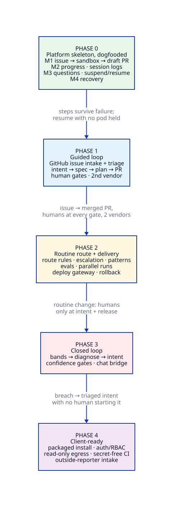

← SDLC essentials · Architecture (draft) · PRD v0.6 DRAFT · full text: PRD.md
Factory8 — PRD at a glance
Intents arrive through one intake contract (first: the project's GitHub issues); agents triage them and a human accepts them. Temporal workflows, written as TypeScript code, drive each run. Artifacts live in git, evidence in object storage. Any agent CLI runs in a disposable Kata microVM that reaches the world only through gateways, and a run waiting on a human holds no compute. The run's route decides how many human gates it gets. Each repo declares its project agent, so every session starts ready to work on that project. Built for engineers who already run agents in the terminal: the interface is the forge and the f8 CLI, with no new UI to learn.
Stage: personal prototype on the author's own project; target: a single-tenant offering installed per client.
What changed since v0.2
| Decision | Effect |
|---|---|
| resolved Beads and Dolt dropped | Artifacts are issues, files and PRs in the forge; evidence in object storage; process state stays in Temporal. Reviewers edit spec.md/plan.md directly (OQ-4, OQ-14) |
| Formulas dropped | The SDLC and its sub-processes are Temporal workflows in code, written by platform engineers with their agents; versioned with worker versioning and replay tests |
| Routes | routine = humans at intent and release only; novel = every gate; high-risk = every gate + tech lead. Agent proposes, human confirms; only a human de-escalates |
| Suspend / resume | A mid-step question suspends the sandbox (pod gone, PVC kept) and resumes the vendor session after the answer, with a handoff note as fallback |
| Intake | One IntentEnvelope + IntakeWorkflow; first adapter polls GitHub issues; triage ends in a draft intent the maintainer /accepts. Prototype: owner's issues only |
| resolved Tenancy | One installation per client, namespace per project; nothing crosses installations (OQ-17) |
| resolved Stack | TypeScript on Node LTS for all Factory8 code; Bun set aside because Temporal's TS SDK supports it only experimentally (OQ-19) |
| Terminal and forge first | Every human action works from the forge and the f8 CLI; no web UI until a need is proven |
| Project agent | Built from the repo's own Nix dev shell (environment) and AGENTS.md (context), plus, from Phase 1, a small .factory8/project.yaml: commands, tools (skills, MCP servers, CLIs), default profiles, route rules, egress and secret requests. Image built from the default branch only, never in a sandbox. Checked before use; works the same in an engineer's terminal |
| resolved Environment providers | Nix dev shell first (flake.nix or shell.nix; the author's projects are all Nix); Dev Containers before client installs (Phase 4); Flox or a Dockerfile can plug in later behind the same interface (OQ-22). Pilot: librepod/marketplace |
| Custom LLM providers | Each vendor CLI is pointed at the LLM gateway (e.g. ANTHROPIC_BASE_URL); the gateway routes to any configured provider, including self-hosted ones |
| No silent stalls | Steps heartbeat with live progress; a stalled step is retried, then escalated |
| Adapter in the sandbox | A small daemon inside the sandbox runs the agent CLI; workers start steps through it and poll its events for heartbeats, so a worker restart never stops an agent. The agent asks questions by running f8-ask, the same for every CLI |
| resolved Dogfooding | Factory8 is developed with Factory8 from M1; librepod/marketplace is the pilot alongside it. Phase 0 lands as usable increments: M1 bead → sandboxed agent → draft PR · M2 live progress, session logs · M3 questions with suspend/resume · M4 recovery (OQ-3) |
| LLM gateway = LiteLLM | The existing instance on the pilot cluster; per-step virtual keys are the target design. LiteLLM can't also proxy git |
| POC Credentials in the sandbox | To get a working POC fast, Phase 0 gives sandboxes a GitHub token and one static LiteLLM key from a Kubernetes Secret, and agents push directly. This knowingly breaks "gateways are the only door" until #1; hardening is tracked as issues, not designed up front |
| Session logs kept | Every agent session's *.jsonl logs are collected into object storage per run and step, to restore a session (even after its sandbox died, or locally) and to analyse later |
| resolved Build, don't reuse | Optio and SuperPlane were tested and rejected: no per-project agent, no custom provider for Claude Code, no microVMs, UI-driven, and neither got a task through |
| Deferred to Phase 4 | AuthN/RBAC (identities recorded, roles not enforced), read-only package egress, secret-free agent CI, outside-reporter intake controls |
Goals
bd ready).Routes: how many humans a run needs
| Route | Human gates | When |
|---|---|---|
routine | Intent, release (PR approved by an independent verifier agent) | Every pattern in the plan is in the catalog; no new dependency, migration or protected path; under the size limit |
novel | Every stage | A new approach; humans help design it |
high-risk | Every stage + tech lead / architect | Touches the project's sensitive paths (auth, payments, infra, migrations) or a security issue |
Rules live in each project's .factory8/project.yaml, within floors the installation sets (PRJ-9); a new project starts novel until its catalog fills. A run leaves routine automatically on a new pattern, new dependency, schema migration, protected-path change or size limit (ORC-12). Recorded from Phase 1; gates skipped from Phase 2.
Invariants
Plus: one declared source of truth per artifact (git by default) · agent identity ≠ human identity in logs.
Rollout in 5 phases

| Phase | Key requirements (IDs in PRD.md) |
|---|---|
| 0 Platform skeleton, dogfooded | M1 f8 run <bead> → sandbox from the repo's Nix shell → Claude Code → draft PR · M2 progress + session logs · M3 questions, suspend/resume, f8 answer · M4 recovery; each used on Factory8's own repo as it lands. Covers: Temporal runs a TypeScript workflow (ORC-1..5, PLT-8) · git + object storage (ART-1..4, 12) · sandbox, network policy, egress proxy, per-run tokens (SBX-1..7) · suspend/resume (SBX-11..13, 15) · project agent for the pilot repo (PRJ-1..3, Nix provider PRJ-8, SBX-16) · adapter contract + Claude Code, custom LLM provider, session logs kept (AGT-1, 3, 6, 9, 10, 11) · no silent stalls (ORC-13) · f8 CLI (PLT-5) |
| 1 Guided loop | GitHub issue intake + triage (INT-1..9, PLN) · spec.md with flagged concerns (DSN) · plan before code (BLD-1) · review workflow (DEP-1/2) · gates as signals + gateway policy (DEP-5/11) · route recorded (ORC-11) · project agent builds and checks (SBX-17, PRJ-4/5) · Codex as 2nd vendor (AGT-2) |
| 2 Routine route + delivery | Routine route enforced with escalation and pattern catalog (ORC-12, BLD-3) · eval suite gates config (TST-6) · conformance suite + pi as 3rd vendor (AGT-2/7) · deploy gateway + autonomy tiers + rehearsed rollback (DEP-8..10) · per-project warm pools and caches (SBX-18), project agent local parity and f8 project init (PRJ-6/7), parallel runs |
| 3 Closed loop | Deterministic detection + σ tiers (MNT-1/2) · incidents enter through intake (MNT-3/4) · confidence gate with independent verifier (MNT-6) · incident → eval (TST-7) |
| 4 Client-ready | Packaged install (TEN-1/2/4) · Dev Containers provider (PRJ-8) · AuthN/RBAC (PLT-7) · read-only package egress (SBX-14) · secret-free agent CI (BLD-8) · outside-reporter intake controls (INT-10) |
Non-negotiables
Factory8-Run: commit trailers, gateway logs; retention policy defined.How we'll know it works
| Speed | Quality | Governance, isolation & cost |
|---|---|---|
| issue→draft intent · intent→spec · plan→merge · time to first review · human minutes per run by route · breach→intent | first-pass CI success · % runs w/o manual restart · rework cycles · cross-vendor pass rate · eval pass rate · defects escaped from routine runs | gate wait time · prod gate violations (0) · blocked-egress events · sandbox security incidents (0) · pod-hours held while waiting (0) |
Baselines don't exist yet (OQ-8): capture before Phase 1.
Top risks
/accept of a Factory8-drafted intent.Decisions still open
OQ-16 Exact artifact formats and intake envelope (adapter contract drafted in
specs/phase0-contracts.md).OQ-13 Sandbox start, resume and concurrency targets.
Also open: OQ-2 (first policy bundle), 6, 8, 9, 10, 11, 12 — see PRD.md §14. Resolved: OQ-1, 3, 4, 5, 7, 14, 17, 18, 19, 20, 21, 22.